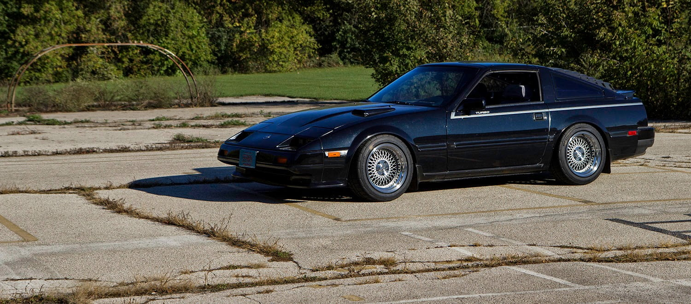
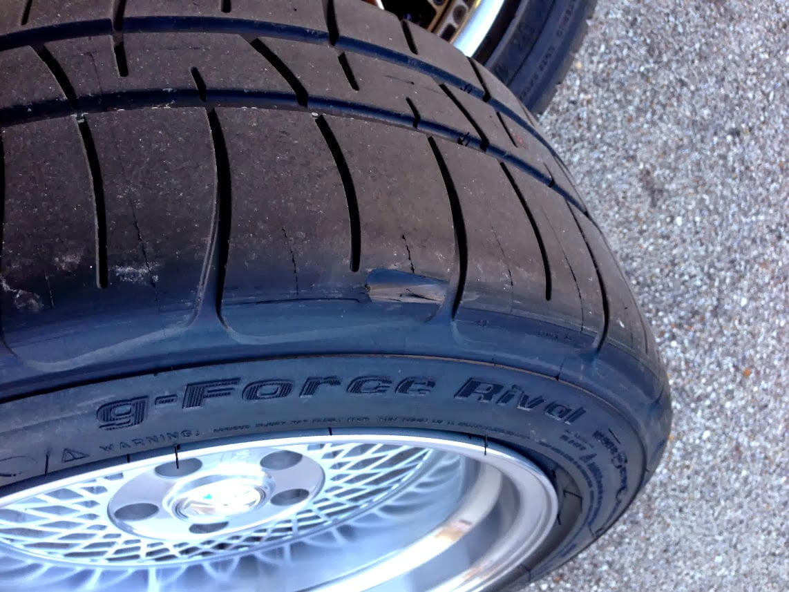

-
I am sure google images has tons of pics of various tires on different wheel widths.
They don't make 255/40/16 or 255/45/16 anymore. Finding any sport tire wider than 225 in 16 is hard these days. There are some 245's left but not many.
225/40/16 doesn't exist either. I don't know why you'd want such a thin sidewall on 225 either (OE turbo size is 225/50/16, OE NA size is 215/60/15). Ideally your total tire diameter should be similar to factory so your speedo stays accurate.
Go to www.tirerack.com to see what kinds of tire sizes are available.
Go to http://www.miata.net/garage/tirecalc.html to calculate your speedo offset if you put other tires sizes on.
EDIT: Didn't realize 245/45/16 was that hard to find now.. jeez.
If you want stretch: 225/50/16 front, 245/50/16 rear (or 245/45/16 if you want to dish out for RE-11's).
No/less stretch: 245/50/16 front, 255/50/16 rear?
It's unfortunate but for wide 16's the current ways to run them are to either go slicks, which have very wide and low-profile sizes, but are for track use only; or go stretched. -
thats where i always check im not worried about the fronts and they do make 225/40/16's
im really trying to figure out the rears
i like my cars without beefy sidewalls and low -
heres a pics of the setup u just mentioned .. the rears to me is good but you said its hard to even find that size. the fronts i guess if they make a 225/45 would be perfect
thanks on the help.
225/50 fronts
245/45 rears
16x9.5 16x10.5 +10
[/QUOTE]
-
Damn these are awesome!
Front offset look good and should clear strut tubes and/or coilover bodies. Spoke clearance looks low and you may need a slip on spacer up front to clear calipers.
frostvectron is spot on with tire sizes. You will want to run 225/50/16 in the front and 245/45/16 in the rears. You are not going to want to run less than 50 series on the front, it will look pretty silly.
I run 225/50 all around on 16x9s.


Be sure to roll those fender, especially up front (remove the black plastic thing and roll them flat) or you are going to take a chunk out like I did.
You could stretch 205/50 on them if you really wanted, but with the stepped lip wheel and that stretch would look more bosozoku.
In my opinion on zenki's/chucki's you can really make them look great on old school 16s. Gives it more of a period correct style while still maintaining some modern day appeal. Lets face it, anyone can slam something on modern day 17s wheels. You have the opportunity to create something unique and stand out.
So those lips some love and polish them up!86na - BlueZ
Shiro #366 - Kouki Monster
85t - Mr Tickles -
^This.
These are like…made for these cars. Like something Rocky would buy for Mrs. Balboa's brand new Z31. Much harder look to pull off than throwing on 17's these days with a wheel that rare.
Stay with 50 series rubber, and toss on 8/6kg coilover setup to match that sidewall. It will be the bomb.
And if you kouki swap that front end, I will personally come beat you with a souvenir bat. sigpic
sigpic -
all lips have been wet sanded and brown compounded in those pics. still have to use the white compound chalk to get them to a mirror finish
2nd pic shows after wet sanding. rest is after brown compound -
Originally posted by Butter
yeah 50's is right i guess the brand makes a differance in the side walls after look at the falkens and the bf's
besides that i know im going to have a very hard time finding the rear flares and a front lip -
Butter is on the money
I have the same 8/6 coilover setup running 50 series. Pair that is made for each other (minus the harmonics that happen to the driver and passenger seat). You are correct on sidewall stiffness. Not all tires are made equally. Make sure you buy something reinforced or has some ribs.
I am not sure what you looking for? You have the initial recipe for a stand out car. 86 + coilovers + kaminari front valance + your match made in heaven Epsilon wheels. Clean, simple, subtle and something that is going to stand out way more than 'slamming some XXRs'. You drive an 80s sports car. Embrace the 80s aesthetics it will get you more more positive attention then you will know what to deal with.86na - BlueZ
Shiro #366 - Kouki Monster
85t - Mr Tickles -
that's the look that im going for but was looking for some nice oldskool 17s staggered 2 or 3pc wheels in trade for my epsilons. but let me see what happens after the snow clears and able to get the car to my house. have to clean out my garage to make room.
also have some lx-c recaros collecting dust that i was selling from my old car but i might end up using them. just have to figure out how to mount them and get the drivers side bolster fixed.

Copyright © 2006–. All rights reserved. Privacy Policy